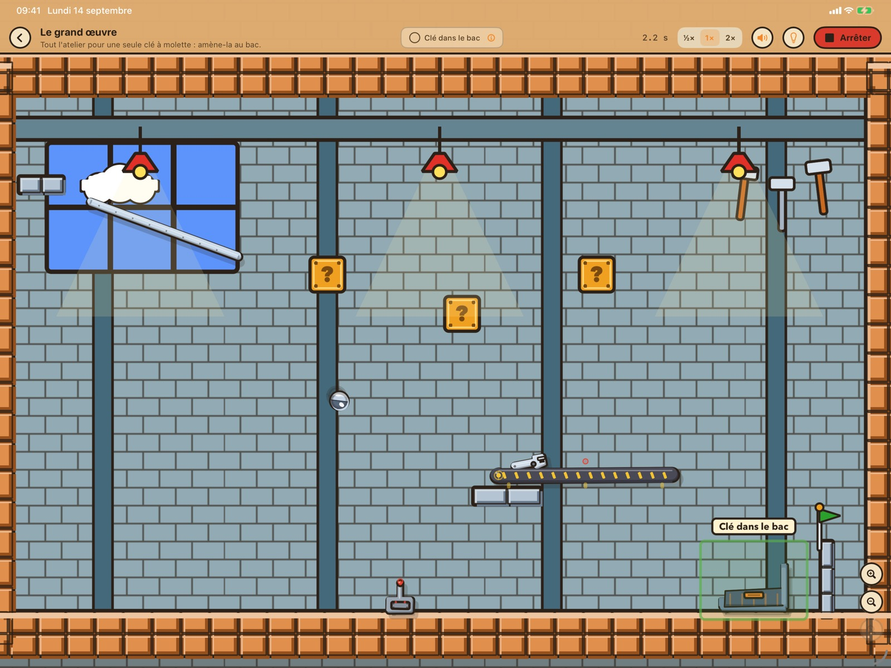
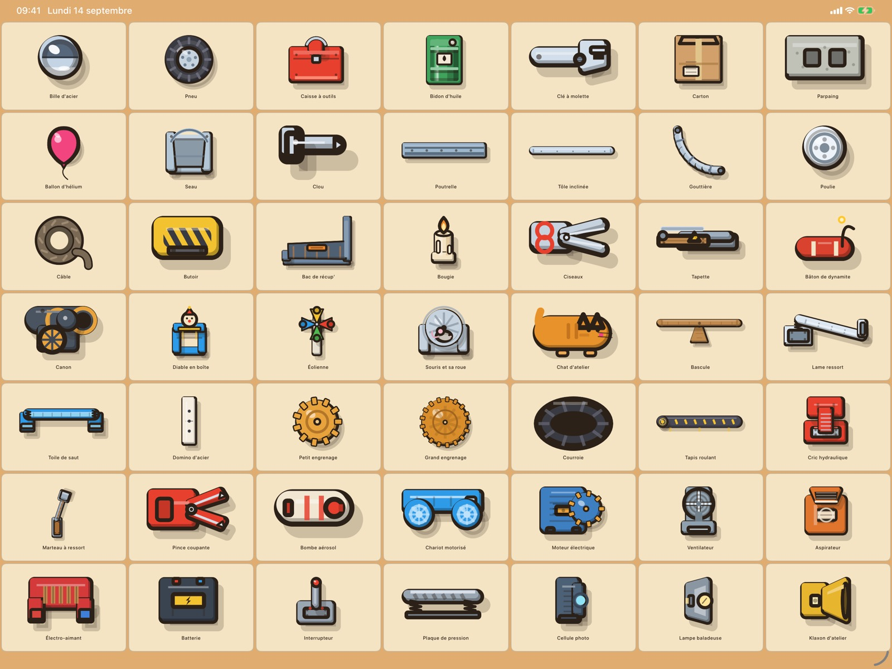
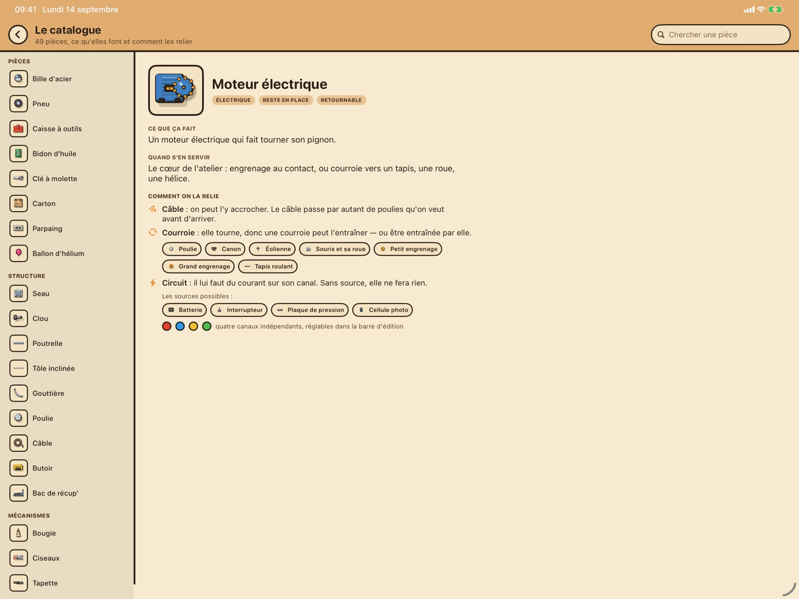
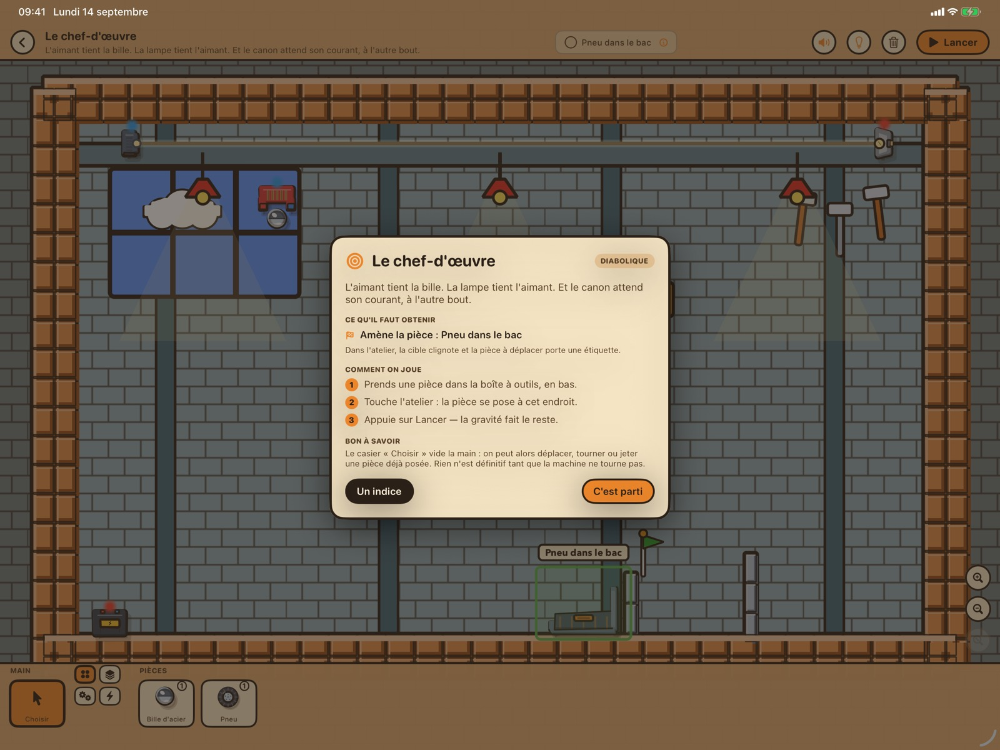

Une bille d'un côté, un bac à l'autre bout de l'atelier, et entre les deux : tout ce qui traîne. Des rampes, des poulies, des dominos, un tapis roulant, un chat, une souris, un aimant, un canon. À vous de monter la machine qui fera — enfin — ce qu'on lui demande.

- 22énigmes offertes
- 49pièces à assembler
- 63énigmes en plus, en option
- 0donnée collectée
On ne trouve pas la réponse. On bricole.
Bob Mécano n'est pas un jeu où l'on cherche LA bonne solution. On pose une rampe, on lance la machine, on regarde tout rater, et on recommence en la déplaçant de dix centimètres. Puis ça marche, et c'est très satisfaisant.
Le moteur physique a été écrit pour l'occasion : les billes roulent, les câbles se tendent, les dominos tombent parce que la simulation le décide, jamais parce qu'une animation le prévoyait. Deux parties de la même énigme ne se ressemblent pas tout à fait.
Quarante-neuf pièces, et la moitié ne sert à rien

La boîte à outils ment. Elle contient toujours plus de pièces qu'il n'en faut, et les mauvaises ressemblent aux bonnes : une gouttière a l'air d'une rampe, un aspirateur d'un ventilateur, un tremplin d'une bascule. La moitié du jeu consiste à trouver lesquelles servent — et lesquelles vous font perdre dix minutes.


Et vos propres défis
Un atelier séparé sert à en fabriquer, en trois temps. On monte le décor : tout ce qu'on donne au joueur. On fixe l'objectif : ce que le défi demandera, et à quelles pièces. Puis on passe l'épreuve — on résout son propre défi, et la machine qui réussit est enregistrée avec lui.
Quatre sortes de missions, au choix : livrer une pièce dans un bac, faire se toucher deux pièces — une bille contre un aimant —, faire monter une pièce au-dessus d'une hauteur qu'on désigne du doigt, ou mettre sous tension une lampe, un klaxon, un moteur. On choisit le but, on touche la cible, on touche l'objet.
C'est elle qui fait la garantie. Un défi ne s'enregistre pas tant que son auteur ne l'a pas résolu, et un défi reçu est rejoué en entier avant d'être rangé : s'il ne se résout pas, il est refusé en disant pourquoi. Personne ne peut vous envoyer une énigme impossible. Et la machine de l'auteur sert d'indice à qui bloque.
Un défi tient dans un fichier de quelques kilo-octets. Il s'envoie par message, par AirDrop ou par courriel, comme une photo ; celui qui le reçoit le touche et le défi s'ouvre dans son jeu. Depuis l'accueil, « Ouvrir un défi reçu » va aussi le chercher dans les Fichiers. Aucun serveur, aucun compte : le fichier passe par où vous voulez.
Les lots supplémentaires
Trois lots d'énigmes s'achètent séparément, une fois pour toutes. Ce sont des achats définitifs — pas des abonnements — et ils sont partageables en famille.
| Lot | Énigmes | Ce qu'on y trouve |
|---|---|---|
| Tour de chauffe | 20 | La fusée, les ciseaux, la dynamite, l'aspirateur, le butoir |
| Boîte à malices | 21 | Machines à deux temps : déclencher avant de livrer |
| Machines infernales | 22 | Trois étages, plusieurs objectifs, l'aimant et la cellule photo |
Un achat perdu ? Le bouton « Restaurer mes achats », en bas de l'accueil, les rend sur n'importe quel appareil lié au même identifiant Apple.
Sans réseau, sans compte, sans publicité
Bob Mécano ne collecte aucune donnée. Pas de compte à créer, pas de publicité, pas de traqueur, pas de statistiques d'usage. Le jeu fonctionne entièrement hors ligne : seuls les achats passent par l'App Store, et c'est Apple qui les gère.
Quatre choses sont enregistrées sur l'appareil et n'en sortent jamais d'elles-mêmes : votre progression, le réglage du son, la liste des lots achetés, et les défis que vous fabriquez ou qu'on vous envoie. Un défi ne part que si vous l'envoyez. Lire la politique de confidentialité.
Pour qui
Pour ceux qui démontaient les réveils. Le jeu se joue à partir de sept ou huit ans, et les premières énigmes s'expliquent toutes seules ; les dernières résistent aux adultes. Il n'y a ni minuteur, ni score, ni vies à perdre : on peut poser le jeu au milieu d'une machine et y revenir trois jours plus tard.
Un problème ? Une idée ?
Écrivez à bob.oulhen@gmail.com. Les messages sont lus, et les énigmes qu'on nous signale comme impossibles sont vérifiées une par une. Voir aussi la page d'aide.